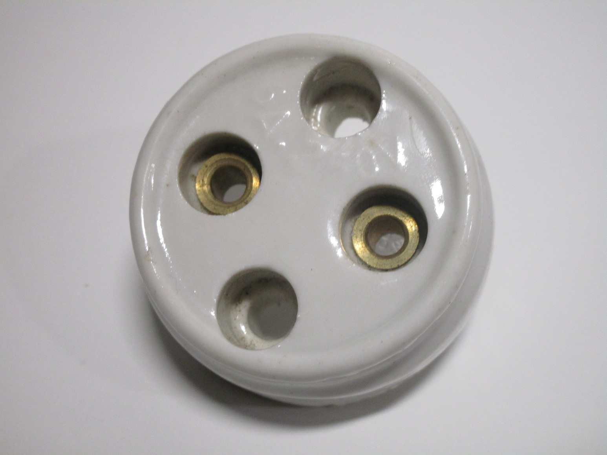
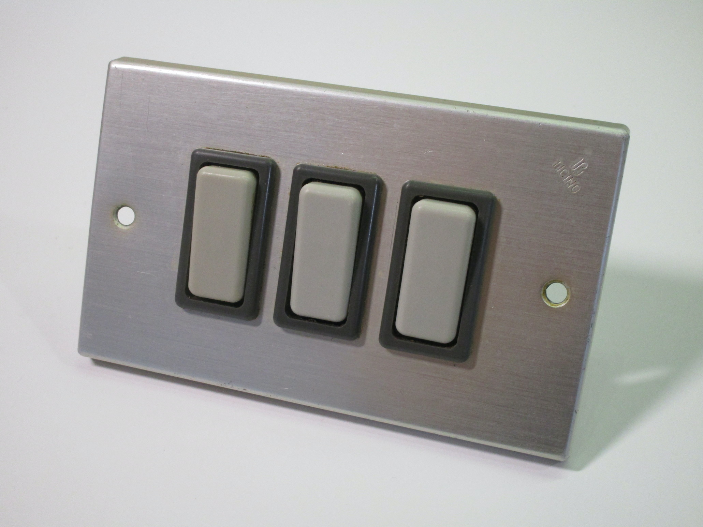

Homepage
Electrical stuff
Old Italian electrical accessories
This section has been divided into multiple sub-pages:

Surface-mount devices (ceramic and bakelite)
Devices made for round boxes (early types)
Devices made for round boxes (later types)

Devices made for rectangular boxes